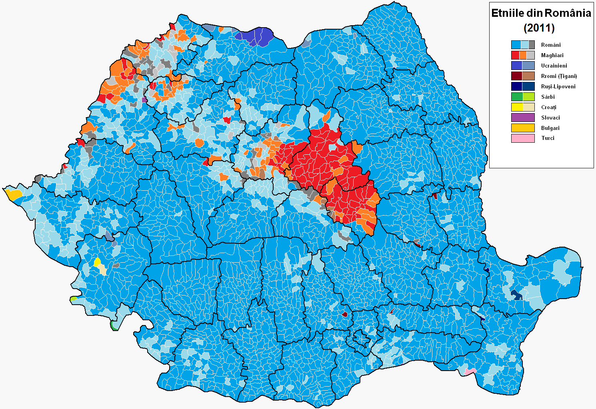
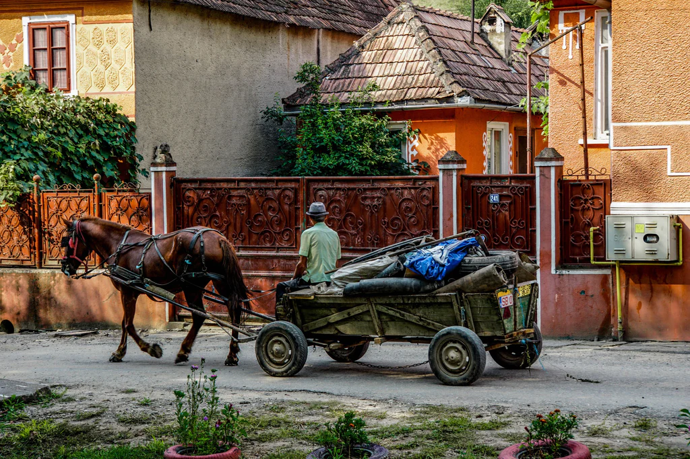
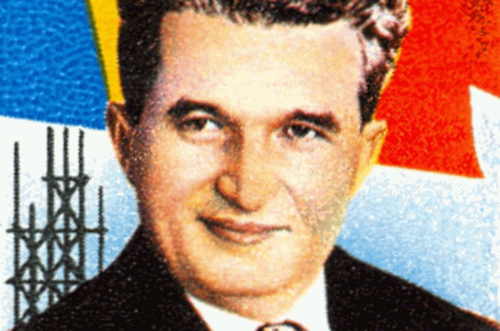

Bevolking

Roemenië heeft een diverse bevolking van ongeveer 19 miljoen mensen (gegevens van vóór 2021). De etnische samenstelling is gevarieerd, met Roemenen als de meerderheid, maar ook aanzienlijke minderheden, zoals Hongaren, Roma en Duitsers. De hoofdstad Boekarest is de grootste stad van het land en fungeert als economisch, cultureel en politiek centrum.
Roemenië heeft te maken gehad met aanzienlijke bevolkingsbewegingen, waaronder emigratie vanwege economische redenen. De bevolking vergrijst, met uitdagingen op het gebied van vergrijzing en bevolkingskrimp in sommige regio's. Het land heeft echter een rijke culturele diversiteit en er wordt Roemeens gesproken, terwijl Hongaars, Duits, en andere talen ook worden gebruikt in verschillende gemeenschappen. Roemenië staat voor de uitdaging om een evenwicht te vinden tussen behoud van culturele diversiteit en het omgaan met demografische veranderingen.
10 leuke feitjes over Roemenië

- Wist je dat je in Roemenië nog vaak paard en wagen tegenkomt?
- Wist je dat Timișoara een van de eerste Europese steden was met elektrische straatverlichting?
- Wist je dat Roemenië groter is dan Nederland, België, Zwitserland én Oostenrijk?
- Wist je dat de best beschermde delta van Europa in Roemenië ligt?
- Wist je dat je in Roemenië het zwaarste gebouw ter wereld vindt
- Wist je dat Roemenië de grootste populatie bruine beren van Europa herbergt.
- Wist je dat Roemenen speciale tradities hebben voor Pasen?
- Wist je dat ze in Roemenië naamdagen vieren?
- Wist je dat een van de grootste ondergrondse gletsjers in Roemenië ligt?
- Wist je dat Boekarest pas later de hoofdstad van Roemenië werd?
Een klein stukje geschiedenis

Een belangrijke historische gebeurtenis in Roemenië was de Roemeense Revolutie van 1989. Dit was een tijd waarin de mensen in opstand kwamen tegen hun regering, die erg streng en autoritair was onder de leider Nicolae Ceaușescu. De protesten begonnen in de stad Timișoara en verspreidden zich snel naar andere steden, zoals Boekarest.
22 december 1989 moest Ceaușescu aftreden en werd uiteindelijk gevangengenomen en gedood. De Roemeense Revolutie zorgde ervoor dat het communistische regime eindigde en dat Roemenië een democratie werd. Dit was een heel belangrijke gebeurtenis omdat het het begin was van een nieuw tijdperk voor het land, waarin mensen vrijer konden leven en hun eigen regering konden kiezen.